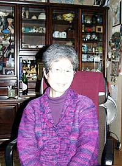
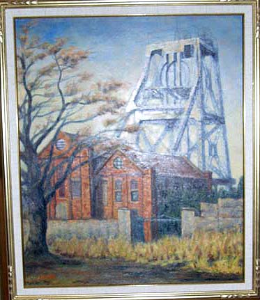

三池の母ちゃんたち（2005年12月18日、千葉県の自宅にて聞き取り）  上形富士子さん、大正15年生まれ、現在80歳。千葉県の九十九里浜に近い所に、かつての三池闘争 を闘ってきた三池の女性が夫と共に移り住んでいる。 御主人は三井三池製作所（三作）で最後まで第一組合に残った22名の中の一人である。現在93歳という高齢ながらお元気 である。 三池主婦会の前身である三池炭鉱主婦協議会（三池炭婦協）は、昭和28年5月、三川支部緑ヶ丘で結成されたのを皮切 りに、その後各支部で続々と結成されていった。このことに危機感を抱いた三井鉱山は赤字を理由に同年8月3464名の指 名解雇者を発表。この中に上形富士子さんの夫も含まれていた。これに対し、三井炭鉱労組連合（三鉱連）は強く反発、 炭婦協も単独で企業整備反対総決起大会を開くなどして、指名解雇撤回を訴え続けてきた。その三池の母ちゃんたちの力 は強く、昭和28年12月5日、「英雄なき113日の闘い」と呼ばれた三井鉱山争議は組合の勝利で終結、上形富士子さんの夫 も職場に復帰した。この頃から、上形富士子さんは仲間と共に闘うことの重要性を感じたという。 上形富士子さんは昭和31年から同33年まで三池主婦会製作所支部の支部長を歴任、昭和34年から同35年まで三池主婦会 本部の総務部長、昭和38年から同42年にかけては製作所代表として三池主婦会を支えた。 「三池闘争の時は本部役員として緑ヶ丘社宅にあった講堂や集会所での集まりに度々招かれて行きました」と語る上 形さんに、私は「緑ヶ丘社宅若葉分会副分会長だった私の母のことを知っていますか」と尋ねてみた。「名前までは覚え ていないが、あなたのお母さんがその時副分会長をされていたのなら、私もお会いしたはずで、あなたのお母さんも私の 顔を見たら覚えていらっしゃると思う。あなたの顔を見ていると、あなたのお母さんの顔をかすかに思い出すようです。」 と上形さんは答えた。
「三池闘争とは何だったのでしょうね。夫の首を切られた母は三池闘争をどう感じ闘ってきたのか、よかったのか、悪
かったのか、今も生きていたなら聞いてみたかった。」と、私は上形富士子さんに問うてみた。  そう答える上形富士子さんは現在、絵画を学んでおられ、帰郷の度にスケッチしてきた万田竪坑や宮原竪坑など三池の 原風景を中心とした油絵の個展を来年開く予定であるという。 私の亡母が大正7年2月生まれ。不慮の事故により64歳で亡くなった。今も生きていたなら87歳になる。「三池の母ちゃ んたちよ、いつまでもお元気で」と祈る。
|